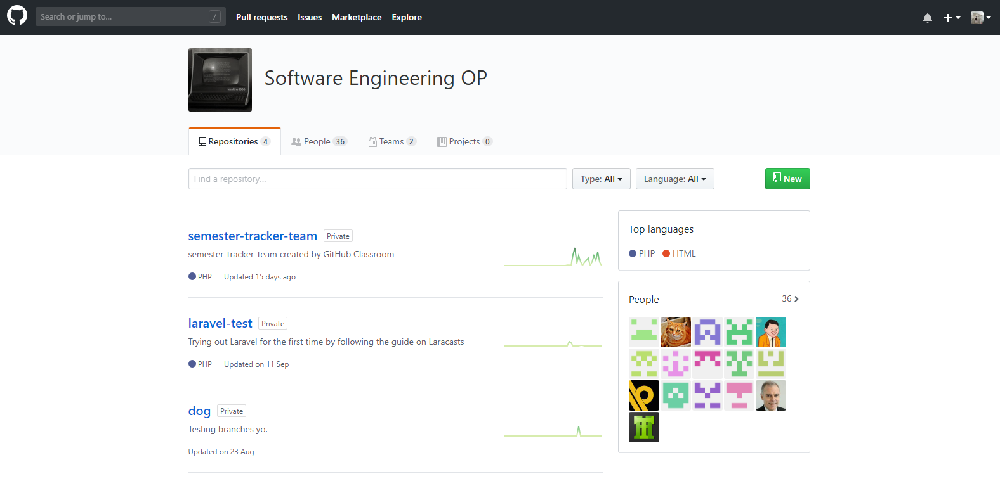

Pre-Sprint
We had a proper introduction to GitHub. The lectures knew about the limited amount of knowledge our class has, we were taught from the very beginning. We were told what GitHub is and why we use it, I appreciated this because it helped me understand not only know what it is but also the importance of using platforms such as GitHub.
We were taught how to use basic Git using Git Bash, I learnt how to add my file/folders from the local desktop on GitHub and from GitHub to the local directory, using the commands: git add *, git commit –m “insert string example here” and git push. Knowing these three commands are essential and is needed to progress further.
Our two lectures give us an example of how our project will be. Martin pretends to be the client who worked to a seal in New Zealand committee while Elise pretends to be the person creating the website. Martin explains to us all the requirements which is the highest priority in agile as he is the customer who should be satisfied. Elise then asks Martin some more questions to gain more requirements. These requirements are now turned into user stories that all has a similar structure “As a ____ I would like to ____ because ____”.
Sprint 1
We were next given a similar project but this time both Martin and Elise were the clients and we were the ones creating the software. Our task was to create a semester tracker aimed to make it easier for lectures to keep track important events, dates and papers throughout the semester. We were told to take notes of the requirements which are:
Our lecturer Elise shows us how to create issue/milestones for the user stories on GitHub, for our entire team, GitHub is a fairly new platform.
Each issue is a milestone which have been dedicated a specific amount of points depending on the difficulty of the milestone, if it’s harder the more points its worth.
Each milestone has a user story as their description, this provides good time management. After a while we will start to forget about some of the milestones mean, but having a user story will remind us in the near future saving time, instead of trying to think about what was meant and possibly misinterpret the milestone.
Each member was given a single milestone which was due in a week. My task is to create an FAQ page. First thing I did was find out what some of the most common questions were, I decided to go talk to a lecturer of mine and ask him what he needed. Unfortunately, this information was not needed as the questions needed were already done by another classmate, I used his questions as this maximizes the amount of work not done.
Sprint 2
My next milestone was see all given day, this is due in two weeks’ time. The user story is: As a lecturer I need to see all dates for a specified day (e.g. All Tuesdays ever). The user would have the ability to show and hide specific (multiple) weeks of the semester. I decided that best thing to do was create a table that could hide and show columns, to do this I used art of maximizing the amount of work not done by using a w3schools table and hide and show script. I used the combination of HTML and JavaScript, although my buttons did not have the best layout. I managed to get my milestone working, which is a big part of agile to have working software, but it wasn’t perfect. It wasn’t responsive at all and would get in the wrong order when selected randomly.
During this Sprint we were introduced to version control aka branches. We had to make a separate repository called “dog”. The reason for this is because we didn’t want to mess up the branches for our actual project while we are just learning for the first time. We created branches from the master through GitHub by just typing the name in the input box and pressing ENTER, here’s an example, if I wanted to create a branch from the master called Bob:
I feel like this will be an extremely useful skill as it allows more flexibility to makes and learn from mistakes and also. It is human nature to make errors, this makes it less stressful to build projects around motivated individuals as this is part is very important in agile. This picture below is how we implemented branches into our Semester Tracker:

This was the result of my FAQ page, although my web skills have been rusty and honestly not that great, I was able to figure out how to create the basic html page with a hint of CSS for the margins. I used URL links for the policies and list tags to number the FAQ.
Sprint 3

Our third sprint was different to the other ones, we were given the chance of learning a PHP frame work known as Laravel. This was very difficult at first because I didn’t even know what a framework was (even though I know what boot strap was).
Setting Laravel took our team over a week to get working, we had to get into the habit of downloading and installing composer while opening MAMP. It took us a while at first but got used to deploying and installing the dependencies, libraries or other technologies into our project. I was helped by a team member and was able to help out some other members who did not understand at the time.
To learn Laravel, I went through the online tutorials available on Lynda.com, it is very interesting with all the things available on Laravel, it can take a while to get use to the folder system, but once I understood the main folders, I was able to make progress. Although I am still not great with the routes. I was questioning why Laravel is the more agile method, then realised that Laravel is the fastest and easiest option in the long term as it makes the development side easier.
Sprint 4
For this sprint we had to convert our Semester Tracker into Laravel, this task wasn’t easy. By now Elise has already asked for my milestone to become dynamic and not hard coded, I did not realise the difficulty at the time and had to get a lot of help on it. Eventually we all decided to scrap my filter table for show days of the week and start from scratch in PHP. The only part of my code that was kept was the strtotime function and my simple table for loop. We decided to split my milestone into smaller milestones as it was bigger than we first realised, for now we just had my hard coded version, it was now clickable but that’s it. We did manage to convert into PHP during this sprint but only what was need to change. As it is not agile to do something that is not required. We made the velocity for the next one half the speed as the holidays are coming up and to be more agile we are going to be working at a sustainable pace for a holiday. We will manage to take time out to clean up our project.
Sprint 5
I created a branch of my branch so we could be more efficient time wise and work on specific parts. I was confused at first because I was only making a branch from master, eventually realised that I have to be within the branch then create a branch. Although I failed multiple times thinking I was doing this at first. I eventually merged my branch of the branch to master and since the branch automatically merges with master. Both branches were complete by this time. Unfortunately our website is not live yet due to out of class issues.
Sprint 6
For our final sprint we decided that it was better that we didn’t start a newer milestone and fully completed the milestones that we are working on. Although all the major stuff is out of the way, there is still messy and slightly broken milestones. During our scrum, we talked about how it would be worse if we started another milestone and left it unfinished while we could fully complete what we have. I just did some small adjustments to the check boxes for the filter to make it look better.
Reflection
From working with something as simple as HTML to converting into Laravel was a big step up. In-between, I have managed to improve my CSS, JavaScript and even JQuery, I realised the importance of version control and how the industry actually works (sort of). I realised the difference with working on assignments with a team compared to by myself, branches on GitHub being a good example as multiple people are able to work on the same project without effecting the master.